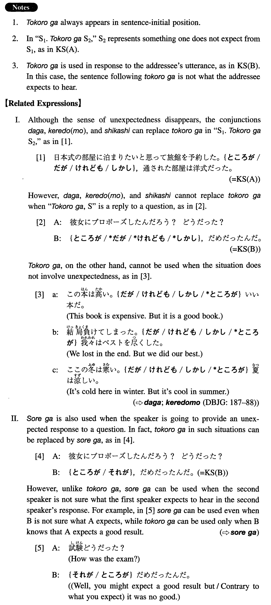

ところが (I. 503) A conjunction which is used to present what in fact happened or what is in fact the case when something else was/is expected.However; but
(ksa). 日本式の部屋に泊まりたいと思って旅館を予約した。ところが 、通された部屋は洋式だった。 I wanted to stay in a Japanese-style room and made a reservation at an inn. However, the room I was shown to was a Western-style one. (ksb). Ａ：彼女にプロポーズしたんだろう？どうだった？Ｂ：ところが 、駄目だったんだ。 A: You proposed to her, right? What happened? B: It didn't work out. (literally: It was no good.) (a). 私の娘はアメリカにいる時綺麗な英語を話していた。ところが 、日本へ帰って一年もたたないうちにきれいに忘れてしまった。 My daughter was speaking beautiful English when she was in America. However, she forgot it completely within a year (literally: even before one year elapsed) after we came back to Japan. (b). 日本から来た有名な先生の講演があるというので行ってみた。ところが 、その先生は英語が下手で何を言っているのか全然分からなかった。 Because I heard that there was going to be a lecture by a famous professor from Japan, I went (to listen to it). However, his English was so bad that I didn't understand what he was saying at all. (c). 先生は私達に遅刻してはいけないと何度も言った。ところが 、次の日、時間通りに行ってみると先生はまだ来ていなかった。 Our teacher repeatedly told us that we mustn't be late for his class. However, when I went to his class on time the next day, he was not yet there. (d). アメリカへ来ればいくらでも仕事はあると言われた。ところが 、来てみるとアメリカは不況でどこにも仕事はなかった。 I was told that if I came to America, there would be a lot of jobs. However, when I came, there were no jobs anywhere because of the depression. (e). アメリカでは鋸は押して切る。ところが 、日本では引いて切る。 In America you push a saw in order to cut; however, in Japan you pull one to cut. (f). A: 今晩のパーティー、君も来てくれるね。B: ところが 、あいにく行けないの。 A: [male speech] You can come to tonight's party, too, can't you? B: [female speech] No, I'm afraid I can't. (g). A: 彼女は結婚しているんでしょう？B:そう見えるでしょう？ところが 、まだ独身なんですって。 A: [female or polite male speech] (She is married, isn't she? B: [female speech] She looks like it, doesn't she? But I heard that she's still single. 